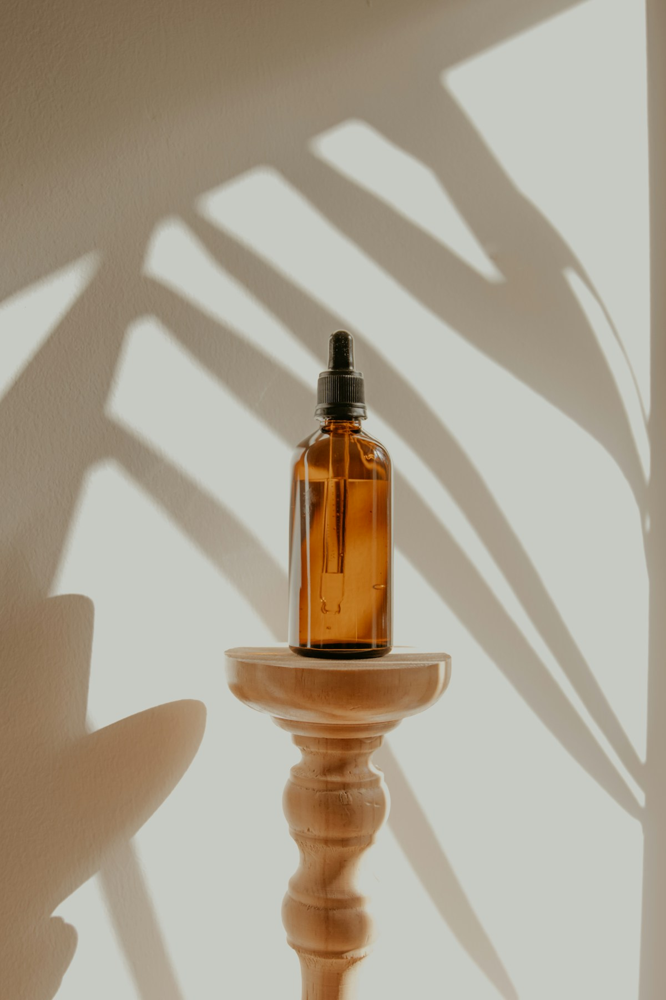
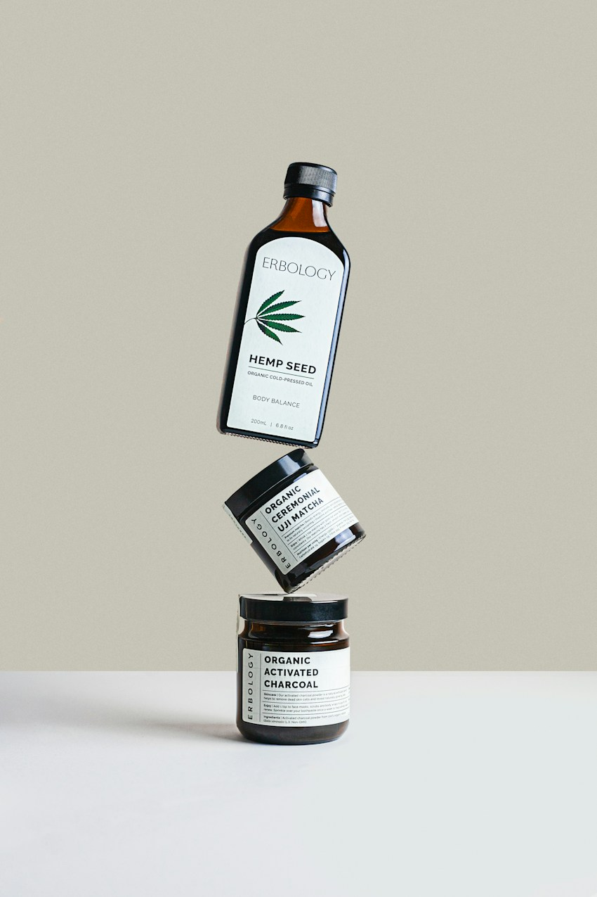

The daily favorite
The Daily Oil
Nourish. Soften. Take a moment.
Earth-minded essentials for your skin,
your senses, and a slower kind of everyday.


Nourish. Soften. Take a moment.
A little care. A softer landing.
Unwind. Exhale. Come back to you.
We believe the best part of your day can be the simplest. A drop of oil. A warm bath. A moment that's just yours.
ROOTED is a concept for a more considered kind of care. Inspired by plants, grounded in everyday life, and made to feel a little more human.
Ideas, observations, and small invitations
to reconnect with the everyday.